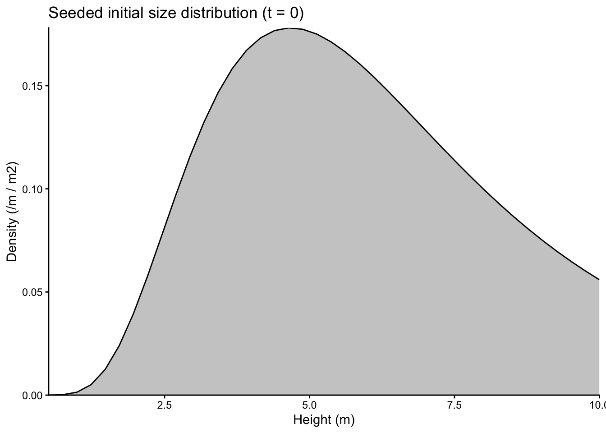
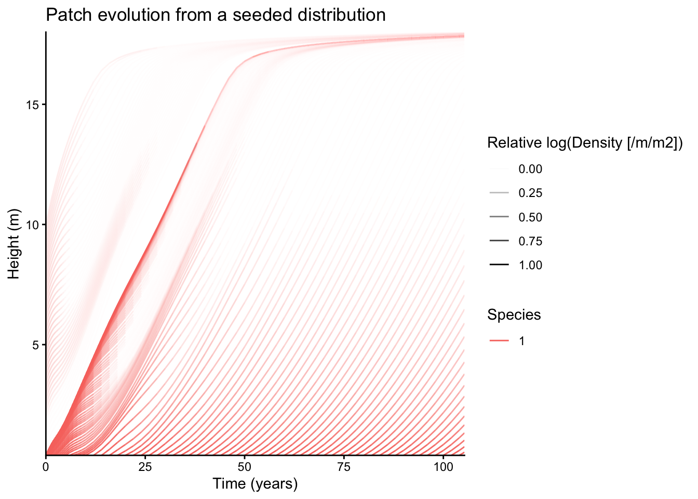
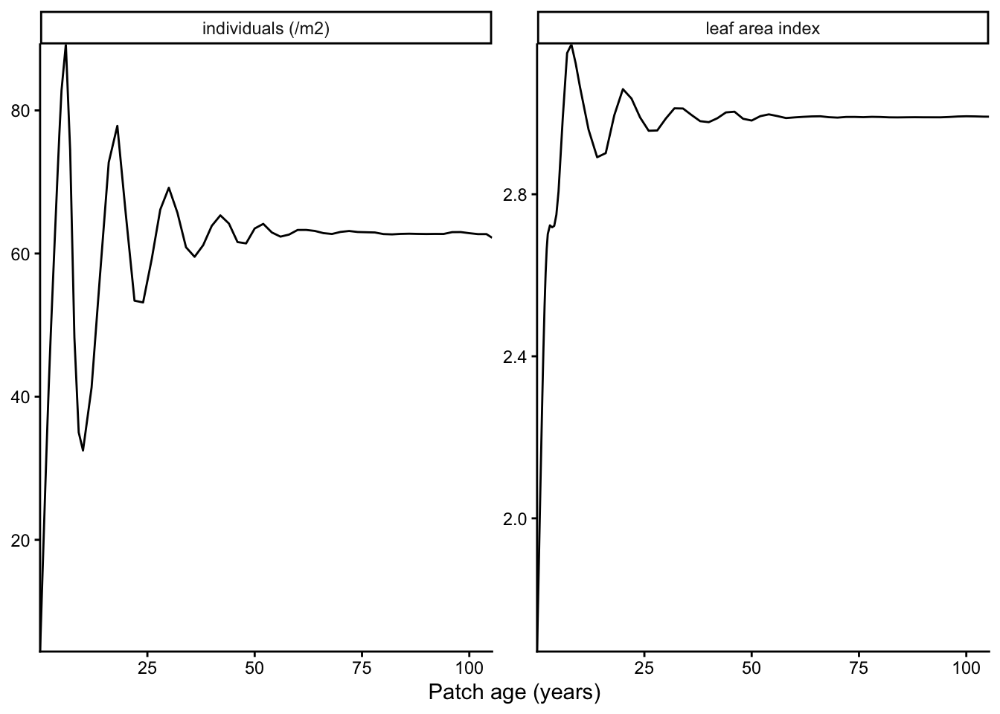
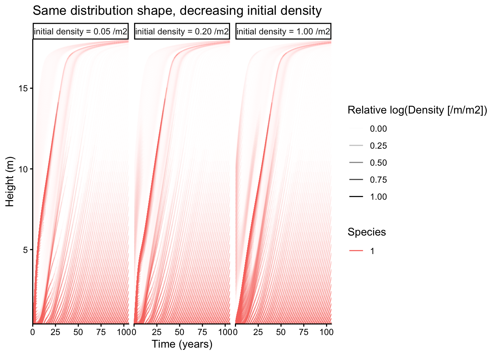

library(plant)
library(dplyr)
library(tidyr)
library(ggplot2)
p0 <- scm_base_parameters("FF16")
p <- add_strategies(p0, trait_matrix(0.0825, "lma"), birth_rate = 20)Initialising a patch
guide
By default a plant patch starts empty and grows from seed: nodes (cohorts) are introduced on a schedule and integrated forward as characteristics of the size-structured PDE. Sometimes you instead want a patch to start with plants already in it — either to resume a run you stopped earlier, or to seed a patch with an arbitrary initial size distribution and watch it evolve.
This guide covers both. In each case, the starting state is attached to a Parameters object—the object that holds the strategies and settings for a run. When the patch is reset, an ordinary run_scm(p) reads that state without needing a special run argument.
Exporting and resuming a run
Run a patch, collecting a snapshot of the whole population after each step, then export the state part-way through:
scm <- plant:::SCM("FF16", "FF16_Env")(p, Environment("FF16"), Control())
scm$collect <- TRUE
scm$run()
# export the patch about half-way through the run
k <- floor(length(scm$history) / 2)
state <- export_patch_state(scm, step = k)export_patch_state() saves both the plants and the information the solver needs to continue them. This includes every node’s ODE state, the current patch age, the unused part of the node-introduction schedule, and per-node birth bookkeeping such as introduction time, initial patch density, and survival at birth.
set_initial_state() writes that onto a Parameters object, and run_scm() resumes from it:
p_resumed <- set_initial_state(p, state)
resumed <- run_scm(p_resumed, collect = TRUE)The resumed run closely reproduces the original. The checkpointed state is loaded exactly, but the adaptive ODE solver’s internal step size is not part of the checkpoint. Its later steps can therefore differ slightly, so the recovered fitness agrees to a few parts in \(10^5\) rather than bit-for-bit:
c(original = scm$net_reproduction_ratios,
resumed = resumed$net_reproduction_ratios) original resumed
0.8444730 0.8444729 Because the state lives on the Parameters object, the resumed run is fully self-describing: you could saveRDS(p_resumed) and reproduce the continuation in a fresh session.
Seeding an arbitrary size distribution
Seeding a size distribution supplies the plants present at patch age zero; it does not replace recruitment later in the run. Build the initial state from node heights and densities with make_initial_state(). Mortality, fecundity, accumulated reproduction, and heartwood start at zero. Recruitment then continues normally for \(t > 0\).
As an example, take a log-normal distribution of heights, normalised to a target total density — the same shape PR #304 used to motivate this feature:
# a log-normal density over heights, scaled to a target total density and
# expressed as node heights + densities
ln_dist <- function(mean_height = 6, log_sd = 0.5, density = 1,
min_h = 0.5, max_h = 10, n = 40) {
h <- seq(min_h, max_h, length.out = n)
d <- dlnorm(h, log(mean_height), log_sd)
list(heights = h, densities = d / plant:::trapezium(h, d) * density)
}
dist <- ln_dist(mean_height = 6, density = 1)
tibble(height = dist$heights, density = dist$densities) |>
ggplot(aes(height, density)) +
geom_area(fill = "grey80", colour = "black") +
labs(x = "Height (m)", y = "Density (/m / m2)",
title = "Seeded initial size distribution (t = 0)") +
coord_cartesian(expand = FALSE) +
theme_classic()
Seed a patch with it and run as usual. run_scm(collect = TRUE) returns the standard tidy output, so the seeded run drops straight into the usual plotting and aggregation helpers:
state0 <- make_initial_state(p, heights = dist$heights,
densities = dist$densities)
seeded <- run_scm(set_initial_state(p, state0), collect = TRUE)plot_size_distribution(seeded$species |> drop_na()) +
coord_cartesian(expand = FALSE) +
labs(title = "Patch evolution from a seeded distribution")
The fan of lines starting at \(t = 0\) is the seeded population growing and being shaded out; the lines that appear later are recruits arriving on the schedule.
Aggregate properties come from the same tidy table via FF16_expand_state() and integrate_over_size_distribution():
totals <- seeded |> FF16_expand_state() |> _$species |>
integrate_over_size_distribution()
totals |>
select(time, area_leaf, density) |>
rename(`leaf area index` = area_leaf, `individuals (/m2)` = density) |>
pivot_longer(-time) |>
ggplot(aes(time, value)) +
geom_line() +
facet_wrap(~name, scales = "free_y") +
labs(x = "Patch age (years)", y = NULL) +
coord_cartesian(expand = FALSE) +
theme_classic()
Seeding the same distribution shape at different total densities shows how the starting density shapes the early dynamics before the patch converges:
densities <- c(1.0, 0.2, 0.05)
panel <- lapply(densities, function(dn) {
d <- ln_dist(mean_height = 6, density = dn)
r <- run_scm(set_initial_state(p, make_initial_state(p, d$heights, d$densities)),
collect = TRUE)
r$species |> drop_na() |>
mutate(scenario = sprintf("initial density = %.2f /m2", dn))
}) |> bind_rows()
plot_size_distribution(panel) +
facet_wrap(~scenario) +
coord_cartesian(expand = FALSE) +
labs(title = "Same distribution shape, decreasing initial density")
Plausible initial conditions
Not every combination of starting sizes and densities is biologically or numerically plausible. Very large plants at very high density can self-shade so strongly that production becomes negative and node densities become non-finite. plant checks for this and stops with an error:
bad <- make_initial_state(p, heights = seq(8, 12, length.out = 20),
densities = rep(50, 20))
run_scm(set_initial_state(p, bad))Error:
! Rates of initial node densities exceed ~1e43 and will likely produce non-finite densities; provide more plausible initial conditions (smaller sizes and/or lower densities).If this happens, begin with a compatible state from export_patch_state(), or reduce the sizes and densities of the seeded plants. An exported state is the safest choice for resuming a run because it preserves the full node bookkeeping.